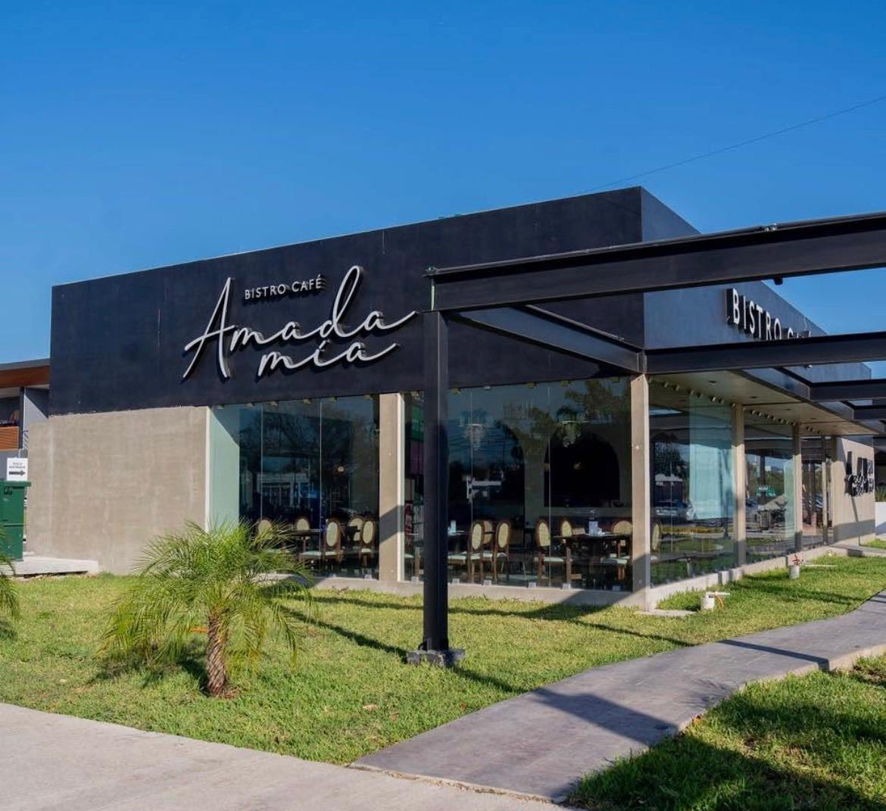

Elegancia y sabor en el corazón de Caucel. Disfruta de una tarde mágica envuelta en aromas de café y flores.
Amada Mía Caucel combina el lujo boutique con la calidez de un hogar. Un espacio diseñado para compartir momentos inolvidables.
Descubre nuestra selección Premium de repostería francesa y desayunos yucatecos gourmet.
